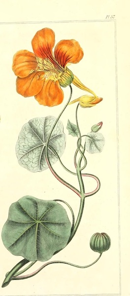
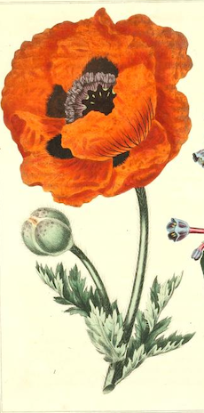

-
1. Bird of Paradise
Little Globe, Magnificence
"The bird of paradise alights only upon the hand that does not grasp" -John Berry

-
2. Crown Imperial
Imperial Majesty, Arrogance
"The crown imperial; lillies of all kinds,/The flower-dluce being one! O, these I lack,/To make you garlands of, and my sweet friend,/To strew him o'er and o'er!" -The Winter's Tale, Act Four Scene Four
According to early modern Christians, who first encountered the Crown Imperial after French botanist Carolus Clusius imported it from Constantinople, the flower once inhabited Paradise. At that time, the flower bore its petals upright and was known to be so unbearably beautiful that all other flowers gazed upon it in admiration and envy. However, once its arrogance and pride became known, it was punished and cursed to hang its petals in shame.
Aside from parallels between the Crown Imperial and post-lapsarian society, the flower stood as a favorite of European nobility, and received its name from the Duke of Tuscany in the 1570s. Since then, it has adorned the lavish residences of the world's most wealthy families, remaining a flower for high society both in Western and Eastern contexts.

-

3. Nasturtium
Victory, Energy
"Nasturtiums, who colored you, you wonderful, glowing things? You must have been fashioned out of summer sunsets" -L.M. Montgomery (1908)
Nasturtiums have a legacy of symbolizing victory on the battlefield, most likely due to their helmet-shaped petals. However, the word "nasturtium" translates loosely from the Latin words "nascus tortus" which mean "convulsed nose." This discrepancy most likely arises from the Nasturtium's spicy flavor, which has led to the seeds and seeds of the bloom being incorporated in different dishes worldwide.
In Victorian times, Nasturtiums resided in a culturally mysterious place. They were exchanged in jest, yet kept regularly in homes to ward off evil spirits (and smells). The flower originates from regions in South America, and in Incan culture, the sweet-smelling bloom was thought to bestow energy and strength to ward off invaders.
-
4. Orange Lily
Wealth
"'O Tiger-lily,' said Alice...'I wish you could talk!' 'We can talk,' said the Tiger-lily: 'when there's anybody worth talking to.'" -Lewis Carroll, Alice's Adventures in Wonderland (1865)
Also known as the tiger lily or the firelily, this variety grows on hillsides and mountain meadows in Central Europe. The orange lily can convey different meanings depending on the cultural or historical context. In general, orange lilies represent confidence and pride (sometimes arrogance).
More specifically, the tiger lily can represent wealth, most likely due to the round spots on their petals, which resemble the shape of coins. Giving orange lillies as a gift can be controversial, with some of the worst meanings connotating hatred and disdain.

-

5. Poppy
Oblivion
"Little poppies, little hell flames,/Do you do not harm?/You flicker. I cannot touch you./I put my hands among the flames. Nothing burns/And it exhausts me to watch you/Flickering like that, wrinkly and clear red, like the skin of a mouth" -Sylvia Plath, "Poppies in July" (1962)